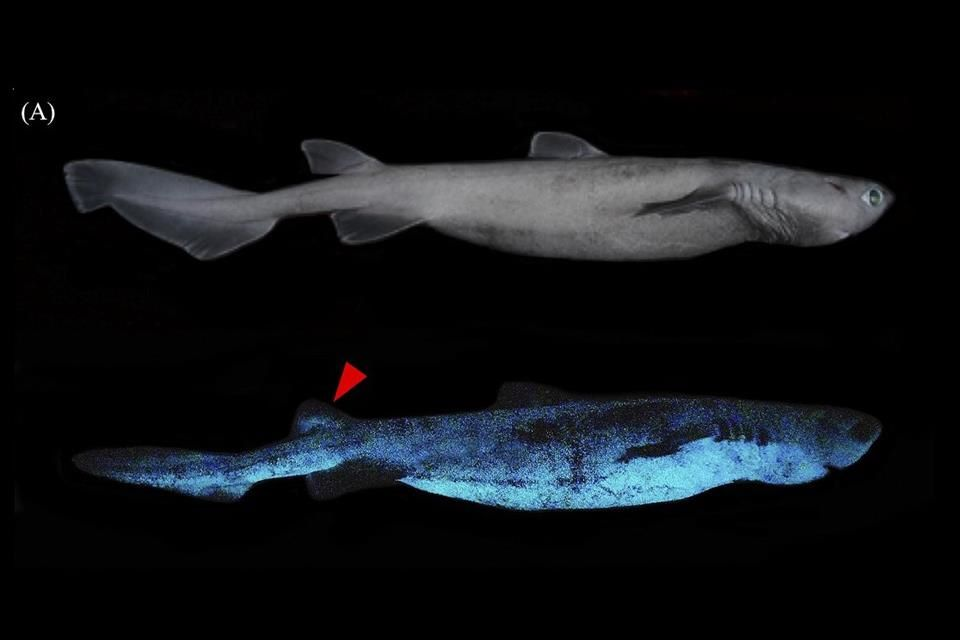

ESPECIES
Se estima que podrian existir entre 450 y 500 especies de tiburones.
Para clasificarlos se toman en cuenta la localizacion, evolucion del resto de los seres vivos
su historia evolutiva comun, lo cual es posible por si taxonomia:
- Reino animalia
- Filo Cordados
- Subclase Elasmobranquios
- Superorden Selaquilomorfos
- Ordenes: Squaliformes, Squantiformes, Carcharhiniformes, Heterdontiformes, Orectolobiformes
Pristiophoriformess y Lamniormes
Clasificacion
Tiburones Squaliformes
Algunas de las especies que se encuentran en esta categoria pueden producir bioluminisencia, habitan principalmente
las profundidades de aguas templadas y tropicales de los distitntos osceanos del palaneta.
Caracteristicas fisicas:
- Tienen dos aletas dorsales
- Carecen de aleta anal
- Tienen 5 aberturas branquiales y con espiraculos
Especies más representativas
| Nombre | Nombre cientifico | Descripcion | Imagen |
|---|---|---|---|
| Tiburon linterna | Etmopterus prínceps | Tiene una cola moderadamente larga y ancha, sus branquias son largas su cuerpo es de color negro intenso, su longitud máxima es de 75 cm. Se encuentra en las laderas continentales, en o cerca del fondo, desde 350 a 2213 metros de profundidad. |
 |
| Tiburon Pigmeo | Euprotomicrus bispinatus | Es el tiburon mas pequeño que vive, tiene un hocico bulboso ojos |
 |
Tiburones Squatiniformes
Esta categoria se le compara con las rayas las cuales son sua parientes evolutivos mas cercanos.
Caracteristicas fisicas:
- Su cuerpo es plano
- Hocico corto
- Filamentos colgantes desde la boca
- Sus ojos se encuentran en la parte superiro de la cabeza
Especies más representativas
| Nombre | Nombre cientifico | Descripcion | Imagen |
|---|---|---|---|
| Tiburon Angelote | Squatina squatina | Su cuerpo puede ser gris, rojizo o marrón-verdoso, esta cubierto de manchas blancas y puntos oscuros dispersos. Los machos suelen ser más grandes que las hembras. Alcanza una longitud promedio de 1.83 y 2.24 metros. Prefieren vivir en fondos de barro y arena costeros. |  |
Tiburones Carcharhiniformes
Lo que caracteriza a estos tiburones es la membrana nictitante en sus ojos.
Suelen ser muy abundantes en aguas tropicales, por lo generalmente profundas.
Caracteristicas fisicas:
- Sus cuerpos estan estilizados dorsoventralmente
- Tiene 5 hendiduras branquiales
- 2 Aletas dorsales sin espinas
- Una aleta anal
- Hocico alargado y puntiagudo
- Boca ancha
- Dientes filosos
- Parpados moviles que protegen sus ojos
Especies más representativas
| Nombre | Nombre cientifico | Descripcion | Imagen |
|---|---|---|---|
| Tiburon Martillo | Sphyrna mokarran | Su rasgo más particular es su cabeza en forma de T. Su primera aleta dorsal es muy alta y curva. Su cuerpo varia de un color verde oliva oscuro a un gris pardusco, la parte inferior siempre es blanca. Un tiburon martillo adulto puede alcanzar la longitud promedio de 3 a 4.3 metros. Suelen habitar sobre las plataformas continentales y aguas profundas cerca de la tierra. |  |
| Tiburon de Punta Negra | Carcharhinus limbatus | Exceptuando las aletas anales y el lódulo superior de la aleta caudal, todas sus aletas tienen puntas negras. Puede ser de un color gris oscuro, gris azulado o bronceado por arriba y blanco por debajo. A lo largo de su flanco tambien se puede observar una banda pálida. De adulto, suele alvanzar una longitud promedio de 1.8 m. Habita en aguas costeras poco profundas. |  |